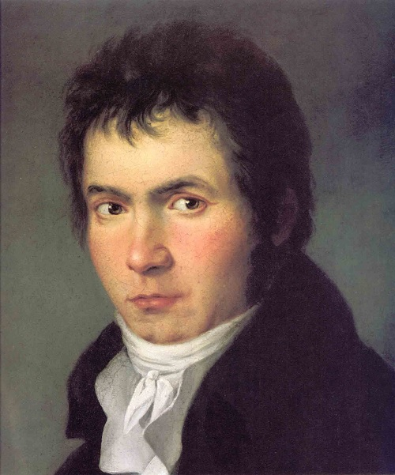

"Os mestres são importantes, mas a minha natureza me diz que todo verdadeiro artista precisa encontrar o seu próprio caminho."
Ludwig Van Beethoven

A Juventude de um Gênio
Ludwig van Beethoven nasceu em Bonn, Alemanha, em 1770. Desde muito jovem, demonstrou talento musical fora do comum, influenciado pelo pai, Johann van Beethoven, que sonhava em transformá-lo em um novo Mozart. Com apenas 7 anos, já se apresentava em público. Aos 12, publicava suas primeiras composições. Foi ainda muito jovem que Beethoven enfrentou desafios que moldariam seu temperamento artístico, como a morte precoce da mãe, um pai alcoólatra e a responsabilidade de sustentar seus irmãos. Mesmo assim, dedicou-se à música com fervor, estudando com mestres como Christian Neefe, e logo ganhou notoriedade como pianista e compositor prodígio em Viena. Esta fase marcou o nascimento do mito: um jovem rebelde, de gênio inquieto, pronto para redefinir os rumos da música ocidental.
Por que conhecer Beethoven?
Não é só música. É história, revolução e inspiração. Descubra motivos que vão além do som.
🎼 Sentir a música
Entenda como Beethoven compunha obras completas mesmo sem ouvir uma única nota.
🔥 Inspirar-se
Conheça a história de um homem que desafiou tudo e todos – inclusive o próprio destino.
💡 Pensar diferente
Beethoven quebrou regras, criou outras e moldou o futuro da música. E isso pode mudar sua visão hoje.